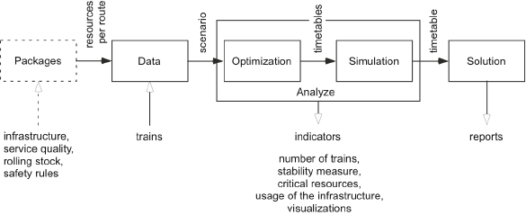

|
[
Home
| Top ][ Motivation
| Principle | Software
| References | Contacts
| Acknowledgment ]
Motivation
The development and the success of high speed trains,
conjugated with
the saturation of roads in and around large cities, are two
factors
boosting the renewed interest for the railway transportation.
Additionally, the many advantages of train for sustainable
development
favors the railway companies. Consequently the rail traffic is
continuously increasing those last years in Europe. However to
remain
competitive, the railway companies have to improve efficiency
and
quality of service offered to the customers: more
trains in operation, less trains
delayed.
As in many European countries, the French railways have been
separated into train operation and railway infrastructure. RFF
is
the French railway
infrastructure manager, while the
SNCF is the historical operator with the dominant market share
position
in the passenger and freight railway transportation. Soon, new
private
and possibly low-cost operators may appear on this market.
They could
operate on some lines, introducing changes in passenger
transportation.
Freight transportation is also concerned. To reduce the
number of
trucks on the roads, the rail freight operators must offer a
comparable
quality of service (punctuality, reliability, flexibility,
average
commercial speed...) in order to increase the number of trains
in
operation. Consequently, a passenger or a freight train
running on an
infrastructure will be subject the payment of a track access
charge to
the infrastructure manager.
In order to implement a rail transport supply strategy, it is
crucial
to have operational tools for supporting the studies and the
analysis
of railway infrastructure development strategies. For example,
tools
must be able to identify the limits of an existing or future
network,
with one or more possible supply configurations. The central
challenge
for an optimal use of the infrastructure requests an
appropriate measure of the railway
infrastructure capacity.
[
Home
| Top ][ Motivation
| Principle | Software
| References | Contacts
| Acknowledgment ]
Principle
RECIFE is a Multi
Criteria
Decision Support Software including models
and
algorithms to evaluate railway infrastructure capacity.
It
helps decision-maker expert
in
railway transportation to optimize the use of
the infrastructure at a microscopic level. It
considers a feasibility or
saturation problem and the stability of
proposed timetables.
RECIFE uses Multi Criteria Decision Making
methodologies within models, algorithms, and functionalities. It
is now
fully operational and has been implemented at the
Pierrefitte-Gonesse
junction and the Lille-Flandres station in order to validate the
principles and the proposed algorithms in real
complex railway (junction or
station) environments. The core of the decision process
in
RECIFE integrates two models.

The optimization
model aims
to maximize the number of train,
i.e. to optimize the timetable's feasibility and saturation
objectives,
as well as the objective representing DM
preferences. The model to solve is then optimized with an
algorithm
based on the principle of metaheuristics. It returns a
collection of
equivalent solutions on the number of trains
scheduled.
Two
equivalent solutions have timetables with the same number of
trains,
but with different types and/or schedules.
The simulation model
maximizes the stability of equivalent solutions (minimize the
sum of
delays). In order to assess the
stability, several objectives are "dynamically" defined by the
DM in
order to simulate the effect of delays on solutions. The DM is
focused
on the efficient solutions who are representative of the best
compromises. Analysis tools provided helps the DM to
choose one timetable among the
efficient solutions highlighted by the software.
[
Home
| Top ][ Motivation
| Principle | Software
| References | Contacts
| Acknowledgment ]
Software
Input data, one
scenario:
The DM defines the list of trains who are candidate to be
scheduled in a timetable and their characteristics (arrival
date,
authorized delay, authorized routes, preferences...). On the
left
part of this figure, 26 passengers trains are candidates for
crossing a
junction.
First stage, the
optimization
activity:
The DM is informed by the convergence of the optimization
algorithm. The figure is a screenshot of the optimization
screen: X
axis denotes the elapsed time, Y axis the number of trains
scheduled in
the solutions. The oscillation results from the restart
strategy
included in the algorithm. No improvement is obtained after
the first
restart for this example.
Second stage, the
simulation
activity:
Visual tools based on MCDM concepts are provided to the DM
for supporting its analysis of solutions. The figure is a
screenshot of
the simulation screen. Three primary delays (60, 180, 300
seconds)
are defined. DM analyzes the corresponding secondary delays in
a two
dimensional flat view showing all the equivalent timetables
(view 1,
left).
With the current options, 6 timetables are efficients. Their
profiles
are shown for
the 3 objectives (60, 180, 300) (view 2, right). DM is
focusing on
solution number 47 which is highlighted on views.
Data in output, a robust
feasible
timetable:
Macroscopic and microscopic quantitative information about
a
solution are available for supporting the analyze. Here all
the 26
trains are scheduled, using 9 routes. The detail by type of
train is
also reported (right top). For this solution, 15 trains are
using the
track 87 appearing as the most often requested part of the
infrastructure. The most busy track sections are also reported
in term
of occupation time (left bottom). Only the track section 4 is
unused
(right bottom) by the solution. For this solution, a primary
delay of
180 seconds generates a secondary delay of 2032 seconds.
Analyse tool 1, space-time
diagram:
This is the common view representing a solution, where X is
the
time, Y the distance. Here 5 trains are scheduled on this
route
Analyse tool 2, Gantt
chart
timetable visualization:
This view allows a detailed examination of the resources
used by each train included in
a solution.
Analyse tool 3, Track
layout
timetable animation:
Any solution can be played
allowing the DM to track a particular train. Here the train 7
is
monitored by the DM.
[
Home
| Top ][ Motivation
| Principle | Software
| References | Contacts
| Acknowledgment ]
References
Degoutin, Fabien, Rodriguez, Joaquin, and Gandibleux,
Xavier. 2005. Première
évaluation des
performances d'un modèle
CSP pour le problème de saturation d'infrastructures
ferroviaires. In Proceedings
of
the ROADEF 2005 -
French National OR Conference (J.-Ch. Billaut et C.
Esswein
Coord.) Collection Sciences, Technologie "Informatique".
Presses
Universitaires François Rabelais. Pages
277-294. ISBN :2-86906-196-X. (In french).
Degoutin, Fabien. 2007. Modélisation
par
contraintes et heuristiques pour l'évaluation de la
capacité d'infrastructures ferroviaires. PhD
thesis, Université de Valenciennes et du Hainaut
Cambrésis, Valenciennes, France. (In french).
Delorme, Xavier, Rodriguez, Joaquin, and Gandibleux, Xavier.
2001. Heuristics for
railway infrastructure
saturation. Electronic
Notes
in Theoretical
Computer Science series, volume 50 of issue 1, 15
pages.
Elsevier.
Delorme, Xavier. 2003. Modélisation
et
résolution de problèmes liés à
l'exploitation d'infrastructures ferroviaires. PhD
thesis,
Université de Valenciennes et du Hainaut
Cambrésis, Valenciennes, France. (In french).
Delorme, Xavier, Gandibleux, Xavier, and Degoutin, Fabien.
2010. Evolutionary,
constructive and hybrid
procedures for the bi-objective
set packing problem. European
Journal
of Operational
Research, 204(2):206-217.
Delorme, Xavier, Gandibleux, Xavier, and Rodriguez, Joaquin.
2004. GRASP for set
packing problems. European
Journal of Operational
Research, 153 (3), 564-580.
Delorme, Xavier, Gandibleux, Xavier, and Rodriguez, Joaquin.
2009. Stability
evaluation of a railway
timetable at station level. European
Journal
of Operational
Research, 195(3), 780-790.
Ehrgott, Matthias, and Gandibleux, Xavier. 2004. Approximative
Solution Methods for
Multiobjective Combinatorial
Optimization. TOP:
International Journal on Operations Research of the Spanish
Society of
Statistics and Operations Research, 12(1), 1-63.
Springer.
Gandibleux, Xavier, Delorme, Xavier, and T'Kindt, Vincent.
2004. An Ant Colony
Algorithm for the Set
Packing Problem. In Ant
Colony
Optimization and Swarm Intelligence
(Dorigo, M., Birattari, M., Blum, Ch., Gambardella, L.,
Mondada,
Fr., & Stutzle, Th. eds). Lecture
Notes in Computer Sciences, vol. 3172, pages 49-60.
Springer.
Gandibleux, Xavier, Jorge, Julien, Delorme, Xavier, and
Rodriguez,
Joaquin. 2010. Algorithme
de
fourmis pour mesurer et optimiser la capacité d'un
réseau ferroviaire. In Fourmis
artificielles
1; des
bases de l'optimisation aux applications industrielles
(N.
Monmarché, F. Guinand, et P. Siarry eds). Chapitre 9, pages
211-240. Traité IC2.
Hermès-Lavoisier. (In french).
Gandibleux, Xavier, Riteau, Pierre, and Delorme, Xavier. 2010.
RECIFE: a MCDSS for
railway capacity.
In Multiple Criteria
Decision Making
for
Sustainable Energy and Transportation Systems
(Ehrgott, M.,
Naujoks,
B., Stewart, Th., & Wallenius, J. eds). Lecture
Notes in
Economics and
Mathematical Systems, vol. 634. Pages 93-103. Springer.
Mérel, Aurélien, Gandibleux, Xavier, Demassey, Sophie,
and Lusby, Richard. 2009. An
improved
Upper Bound for the Railway Infrastructure Capacity Problem
on the Pierrefitte-Gonesse Junction. In Proceedings
of the ROADEF 2009 -
French National OR Conference. Pages 62-76. ISBN
:2-905267-64-X.
Rodriguez, Joaquin, Delorme, Xavier, and Gandibleux, Xavier.
2002. Railway
infrastructure saturation using
constraint programming
approach. In Computers
in
railways VIII
(J. Allan, R. Hill, C. Brebbia, G. Sciutto, and S. Sone, eds),
pages
807-816, Southampton. WIT press.
Rodriguez, Joaquin, Delorme, Xavier, Gandibleux, Xavier,
Marlière, Grégory, Bartusiak, Roman, Degoutin, Fabien,
and Sobieraj, Sonia. 2007. RECIFE:
models
and tools for analyzing rail capacity. Recherche
Transports
Sécurité, 95, 19-36.
[
Home
| Top ][ Motivation
| Principle | Software
| References | Contacts
| Acknowledgment ]
Contacts
Xavier Gandibleux
(
Xavier[dot]Gandibleux[at]univ-nantes[dot]fr ).
Département d'informatique,
Université de Nantes
2 rue de la Houssinière BP 92208, F44322 Nantes Cedex 03 -
FRANCE.
Xavier Delorme
(Delorme[at]emse[dot]fr).
Centre Génie Industriel et Informatique, Ecole Nationale
Supérieure des Mines de Saint-Etienne
158 cours Fauriel, F42023 Saint-Etienne Cedex 2 - FRANCE.
Joaquin Rodriguez
(Joaquin[dot]Rodriguez[at]inrets[dot]fr).
INRETS-ESTAS, Université Lille-Nord de France
20 rue Elisée Reclus, BP 317, F59666 Villeneuve d'Ascq Cedex -
FRANCE.
[
Home
| Top ][ Motivation
| Principle | Software
| References | Contacts
| Acknowledgment ]
Acknowledgment
RECIFE is partially issued from the research project "REcherches
en
Capacité d'Infrastructures FErroviaires" (i.e.
railway
infrastructure capacity studies) involving INRETS (the French
national
institute for
transport and safety research), SNCF (the French national
railway
company), University of Valenciennes, Ecole des Mines de
Saint-Etienne
and University of Nantes. The research project has been
partially
supported by the regional council Nord-Pas de Calais and
European Union research funds (FEDER).
Crédits photos: RFF
|